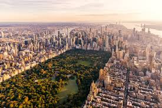

New York City, often called "The Big Apple," is one of the most iconic destinations in the world. Known for its vibrant energy and diverse culture, it is a place where dreams are made. Visitors can marvel at world-famous landmarks like the Statue of Liberty, Times Square, and the Empire State Building. The city offers unparalleled opportunities for art lovers, with institutions like the Metropolitan Museum of Art and the Museum of Modern Art (MoMA). Broadway theaters showcase award-winning productions that draw audiences from across the globe. Central Park, a lush oasis amidst the urban bustle, is perfect for a leisurely stroll or a scenic bike ride. Food enthusiasts will enjoy the city's culinary diversity, from high-end restaurants to classic New York-style pizza and street food. Shopping is another highlight, with luxury boutiques on Fifth Avenue and unique finds in neighborhoods like SoHo. NYC is also a hub of history, with Ellis Island and the 9/11 Memorial offering powerful insights into the past. With something for everyone, New York City is an unforgettable destination that leaves visitors longing to return.
 Contact Us!
Contact Us!